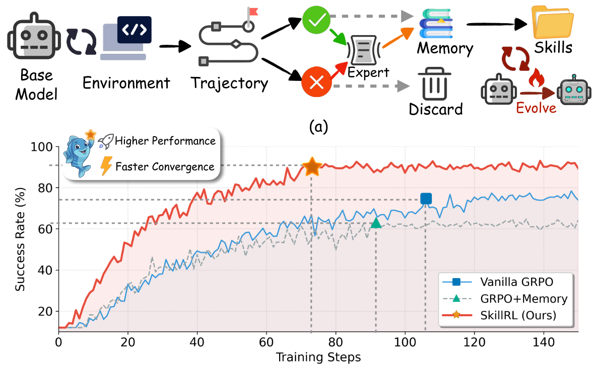
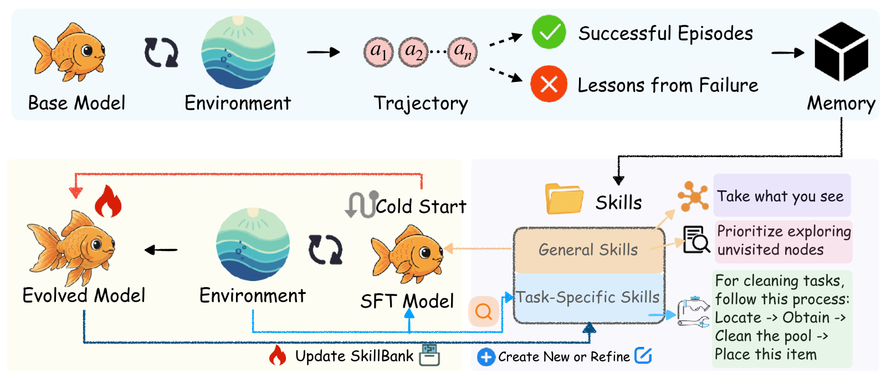
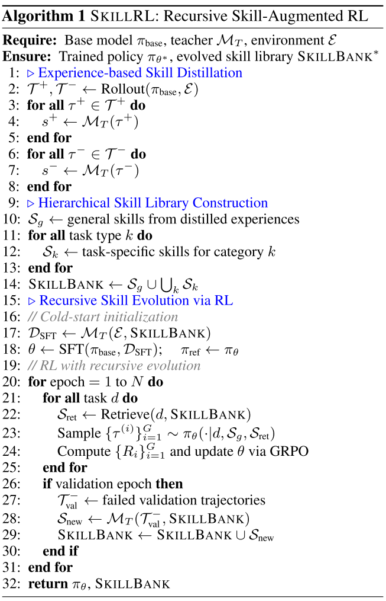

SkillRL论文阅读笔记
Introduction

SKILLRL是一个通过自动技能发现和递归技能进化，把原始交互经验转化为策略提升的框架，主要包括三个部分：
-
设计一种 experience-based skill distillation，把冗长、冗余的交互轨迹压缩成简洁、可执行的知识；
-
把蒸馏得到的经验组织成层次化技能库，从而支持通用技能和任务特定技能的高效检索；
-
引入 recursive skill evolution，在 RL 过程中动态优化技能库，使技能库和 Agent 策略同步进化。
大致的framework如下：

下面的算法流程图可以帮助后续理解每个步骤的发生时间节点：

1.Experience-based Skill Distillation (基于经验的技能蒸馏)
Agent在环境交互产生的原始轨迹 往往很冗长，里面包含探索动作、回退步骤和大量冗余操作，这些信息会掩盖真正决定成功或失败的关键决策。因此，SKILLRL 使用教师模型 将轨迹蒸馏成紧凑、可复用的技能。
作者首先让基础 LLM Agent 在目标环境 中收集多样化轨迹。与很多只保存成功样本的方法不同，SKILLRL 同时保留成功轨迹和失败轨迹。成功轨迹提供“应该怎么做”的策略模式，失败轨迹提供“为什么会失败”和“以后应该避免什么”的反例信息。其中成功轨迹集合和失败轨迹集合可以写成：
- 成功轨迹集合：
- 失败轨迹集合：
其中，是第 条Trajectory，表示该Trajectory任务成功与否，1代表成功，0代表失败。
而后对于成功与失败轨迹进行蒸馏，对于成功轨迹，教师模型提取导致任务完成的策略模式：
其中为任务相关描述，是从成功轨迹中蒸馏出的成功技能。即把一次成功任务执行过程和任务描述一起交给教师模型，让它总结“为什么成功”。那么对于失败轨迹，我们也可以让Agent在其中总结失败的经验：
这一步会识别四类信息：失败点、错误推理或错误动作、原本应该怎么做、以及避免类似失败的一般原则，在SKILLRL中，失败轨迹不是被丢弃，而是被转化为反事实技能。
2.Hierarchical Skill Library Construction (层次化技能库构建)
遵循 Anthropic 提出的 Skills 的设计思想，SKILLRL 将蒸馏出的知识组织成一个层次化技能库 SKILLBANK。这个技能库支持在决策过程中高效检索相关技能。论文把技能分成两层：通用技能和任务特定技能。
2.1.Skill Organization (技能组织方式)
通用技能 捕捉适用于环境中所有任务类型的通用策略原则，例如：
- 系统性搜索
- 优先探索未访问位置
- 动作前检查前置条件
- 保持任务进度计数
- 只有验证完成后才终止任务
这些技能提供跨任务的基础指导。
任务特定技能 则针对某一任务类别 ，包含该类别专门的动作序列、前置条件、常见失败模式和优化流程。
SKILLRL中完整技能库可以表示为：
其中为任务类型总数。
这种设计的好处是，通用技能保证 Agent 有稳定的底层行为规范，任务特定技能提供具体任务流程和避坑经验。
对于每个技能库中的技能，设计包含三部分：
- concise name：简短名称
- principle：策略原则
- when to apply：适用条件
举个简单例子：
1 | Skill Name: |
2.2.Skill Retrieval (技能检索)
推理时，给定任务描述 ，Agent 会检索相关技能来增强上下文。通用技能 总是被加入上下文，因为它们提供基础指导；任务特定技能则通过语义相似度检索。任务特定技能检索公式为：
检索技能后，Agent 的动作策略变成：
因此 SKILLRL 实际优化的是 skill-augmented policy，即技能增强策略。论文还指出，相比原始轨迹，技能蒸馏能实现 10–20 倍 token 压缩，同时不降低经验效用。
3.Recursive Skill Evolution (递归技能进化)
静态技能库不可能预见 Agent 将会遇到的所有场景。随着策略提升并探索新的状态区域，Agent 会遇到一些已有技能无法提供足够指导的情况。为了解决这个问题，SKILLRL 在强化学习过程中引入递归技能进化，使技能库和 Agent 策略共同进化。
这一步包括三个步骤：
3.1.Cold-Start Initialization
在 RL 训练前，作者先解决一个关键问题：基础模型还没有学会如何有效使用技能。简单地把技能提供给一个未改变的模型，收益有限。因此，SKILLRL 先做一个冷启动监督微调阶段。
教师模型 会生成 条技能增强推理轨迹，这些轨迹示范了模型如何在决策过程中检索、解释和应用技能。技能增强 SFT 数据集为：
这一步相当于教模型：
- 看到任务后，应该如何读技能；
- 哪些技能适用于当前任务；
- 如何把技能转化成具体动作；
- 如何在 reasoning 中遵守技能原则。
Base Model随后在这些示范数据上进行监督微调，让模型具备“skill utilization capability”：
3.2.Recursive Skill Evolution (技能库递归更新)
训练开始时，系统有一个初始技能库，里面包含基础任务-动作原则。但这个技能库不可能覆盖所有失败模式。每个 validation epoch 之后，系统会监控每个任务类别 的成功率 。为了让技能库有针对性地增长，只有当某个类别满足：
时，才触发该类别的技能进化。
论文定义验证集失败轨迹为：，为验证集中的失败轨迹集合，为采集到的失败轨迹数量。
论文中提到，这些失败轨迹不是随便采样，而是采用 diversity-aware stratified sampling：先按任务类别分组，再按失败严重程度排序，然后通过 round-robin sampling 保持类别多样性。这样教师模型不会只看到某一类失败，而能总结更全面的技能缺口。
而后，教师模型根据失败轨迹和当前技能库生成新技能或修改建议，即把“当前失败案例”和“已有技能库”一起交给教师模型，让它判断当前技能库到底缺什么：
随后技能库被更新为：
3.3.RL-based Policy Optimization (基于 RL 的策略优化)
论文使用 GRPO 优化技能增强策略。对于每个任务描述 ，Agent 先检索相关技能，然后从当前策略 中采样 条完整轨迹：
每条轨迹得到一个二值奖励：
其中：
- ：第 条 trajectory 成功；
- ：第 条 trajectory 失败。
每条轨迹的归一化 Advantage 为：
最后得到策略更新公式为：
其中重要性比率为：
论文强调，是在技能增强上下文下计算的，也就是说它比较的是新旧策略在同样的任务和技能条件下生成同一条轨迹的概率。KL 惩罚锚定到用于确保 RL 优化不会破坏模型在 SFT 阶段学到的技能使用能力。
实验
实验部分可自行查看原文。
参考资料